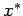
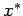

Inhalt Index DeskTop Bronstein

 Numerische Mathematik Numerische Lösung nichtlinearer Gleichungen Iterationsverfahren
Numerische Mathematik Numerische Lösung nichtlinearer Gleichungen Iterationsverfahren


Zur Lösung einer Gleichung, die auf die Fixpunktform gebracht worden ist, verwendet man die naheliegende Iterationsvorschrift
| (19.3) |
die als gewöhnliches Iterationsverfahren bezeichnet wird. Es konvergiert gegen eine Lösung  , wenn es eine Umgebung von  (s. Abbildung) mit
, wenn es eine Umgebung von  (s. Abbildung) mit
| (19.4) |
gibt und die Ausgangsnäherung x0 in dieser Umgebung liegt.
Ist  differenzierbar, dann lautet die entsprechende Bedingung
differenzierbar, dann lautet die entsprechende Bedingung
| (19.5) |
Die Konvergenz des gewöhnlichen Iterationsverfahrens ist um so besser, je kleiner die Zahl K ist.
| Beispiel |
|
, d.h. . |
Hinweise:
1. Im Falle komplexer Lösungen setzt man . Durch Trennung von Real- und Imaginärteil geht die zu lösende Gleichung in ein System zweier Gleichungen für die reellen Unbekannten u und v über.
2. Die iterative Lösung nichtlinearer Gleichungssysteme wird in Abschnitt Nichtlineare Gleichungen behandelt.